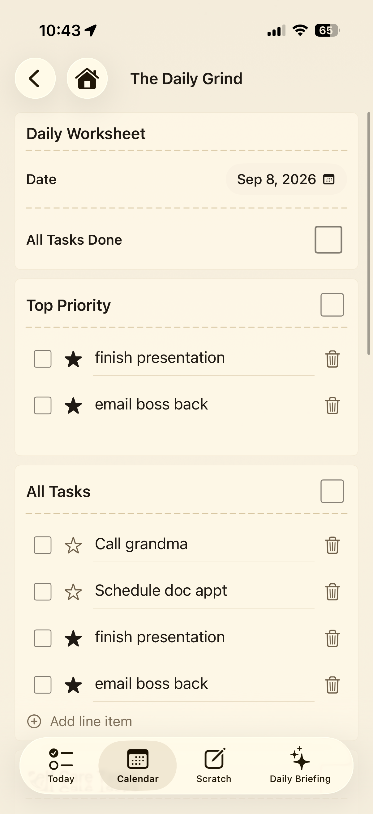
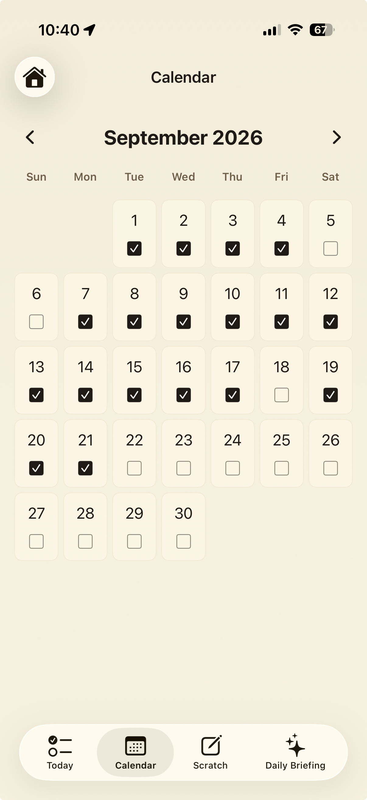
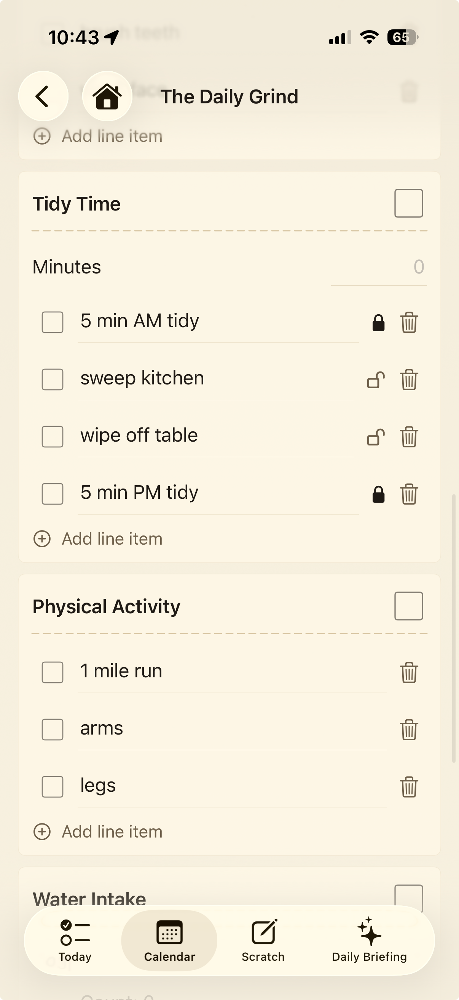
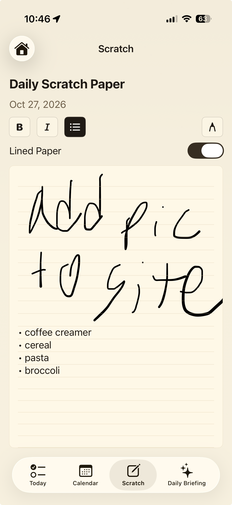
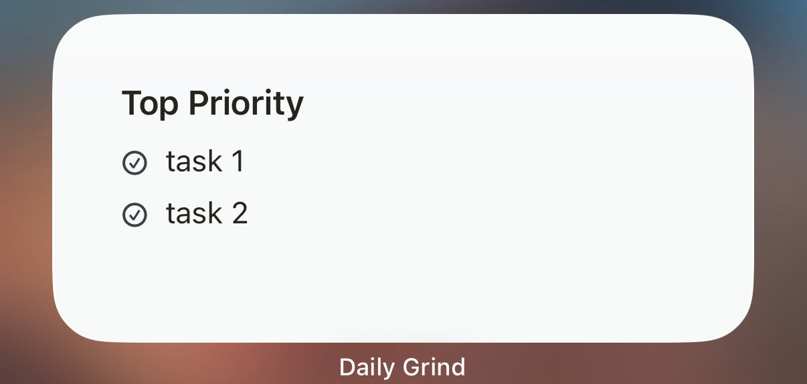
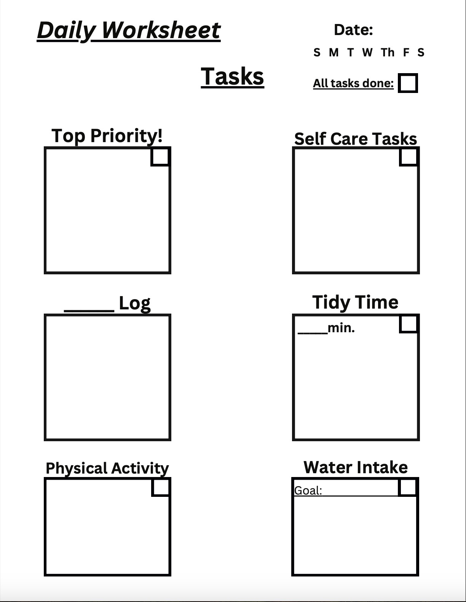

A daily worksheet with a memory
Daily Grind
Your day doesn’t start from zero.
A simple daily worksheet for your priorities, tasks, habits, and everything that carries into tomorrow.

Why Daily Grind?
Yesterday belongs in the picture.
Most to-do lists tell you what’s on today’s list.
Daily Grind also keeps track of what happened yesterday — what you finished, what you didn’t, and what keeps getting pushed forward.
A look inside
Made to feel familiar.
The digital worksheet keeps the plain, practical feel of paper.




How it works
A simple rhythm for the whole day.
One worksheet to plan, track daily life, and carry forward what still matters.
- 01
Set your focus
Choose a Top Priority, then keep the rest of your tasks close by.
- 02
Make room for real life
Track self-care, habits, water, movement, and the everyday routines that matter.
- 03
Carry the day forward
Unfinished tasks and useful context stay in view, so tomorrow can build on today.
Daily Briefings
A little context for today.
Daily Grind can use your recent history and current worksheet to surface unfinished priorities, recurring loose ends, and context that may help you choose what matters next.
The goal stays simple: help you plan the day in front of you.
- 01Recent daysWhat you planned and what carried forward
- 02What’s still openUnfinished priorities and loose ends
- 03Today’s focusA bit more context for choosing what matters

Where it started
A paper worksheet, carried forward.
Daily Grind began as a physical workbook. The app keeps that straightforward daily-page feeling, with the added context of what came before.
Built from a daily worksheet that became an app.
A few useful details
Frequently asked questions.
Is Daily Grind available yet?
Daily Grind is currently in beta. Public availability is coming later.
What devices does Daily Grind support?
Daily Grind is currently being developed primarily for iPhone.
Will there be a web version?
A companion web experience for Daily Grind is planned.
Does Daily Grind use AI?
Daily Grind can use intelligent features to understand daily context and history. The product is designed first and foremost as a simple daily planning tool.
Is my information private?
Daily Grind is designed with privacy in mind. See the Privacy Policy for details.
How do I join the beta?
Use the Join the Beta button below to send us a note.
Start with today
Your day doesn’t start from zero.
Keep your priorities close. Carry forward what still matters.
Join the Beta Download on the App Store